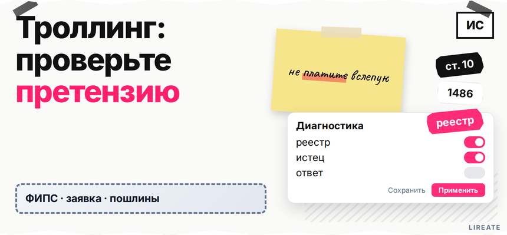
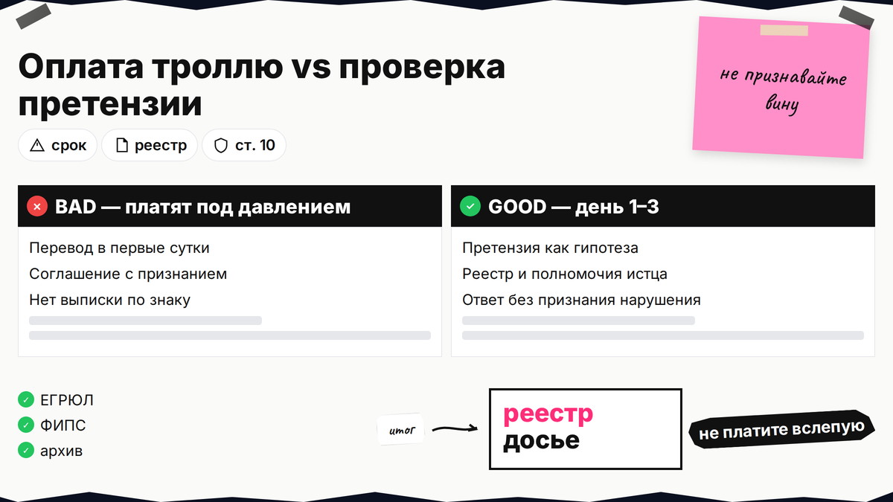
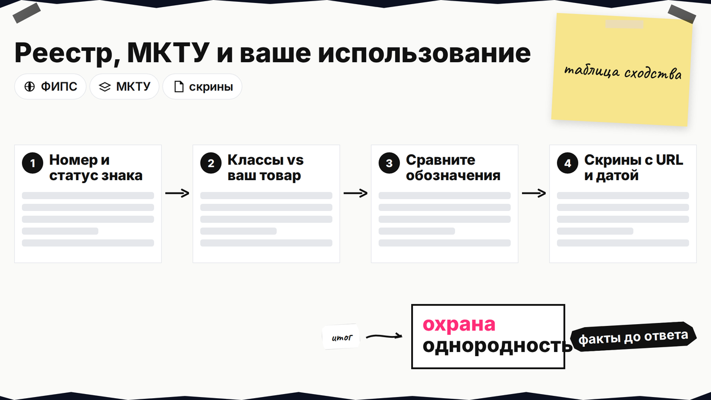
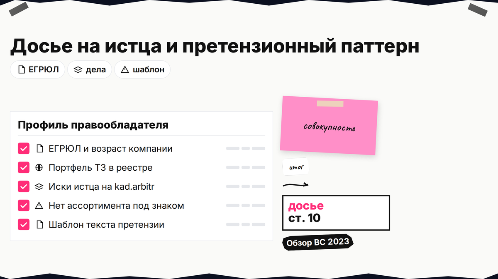

Пришло письмо: "нарушение товарного знака", приложен расчёт компенсации, срок оплаты семь дней. Отправитель незнаком, в ЕГРЮЛ десятки однотипных ОКВЭД, на счету сотни регистраций в Роспатенте. Импульсный перевод часто закрывает спор для правообладателя, а ваш отказ в дальнейших переговорах осложняет. Патентный троллинг - это не официальный ярлык в ГК, а модель: массовые претензии при слабом реальном использовании знака. Здесь - как проверить претензию, собрать досье на истца и защититься досудебно и в суде, опираясь на ст. 10 ГК РФ и Обзор ВС от 15.11.2023. 20.11.2026; не индивидуальная юридическая консультация.

TL;DR / Быстрый инсайт: Претензия от "тролля" - гипотеза, не приговор. Базовый разбор любого письма - в чек-листе L75. Здесь: реестр и объём охраны → досье на истца → матрица злоупотребления (п. 1–2 ст. 10) → мотивированный ответ без признания вины → встречные инструменты (ст. 1486, ст. 1512–1513). Между юрлицами и ИП компенсацию в арбитраже ищут после претензии и 30 дней молчания (п. 5.1 ст. 1252). Кто такие тролли - коротко на Лирейт; контррасчёт суммы - L76; суд - L74.
Гайд для ИП, селлеров и малого бизнеса, который получил массовое или шаблонное требование. Мы не обещаем "автоматическую победу": в деле № А84-1059/2023 (постановление СИП С01-1285/2024) довод о злоупотреблении не сработал, потому что ответчик не доказал заведомо недобросовестное поведение (ГАРАНТ). Зато в деле № А40-271304/2025 апелляция отменила взыскание, квалифицировав активность как "патентный троллинг" (09АП-52119/26).

Троллинг в быту - когда право на ТЗ, патент или контент используют главным образом для денежных претензий, а не для реального товара или услуги под знаком. В акте СИП-1169/2025 (постановление С01-1111/2026) термин раскрывают в связи с массовой претензионной активностью (ГАРАНТ). Юридически вы опираетесь не на ярлык, а на злоупотребление правом и недобросовестность при приобретении знака (Обзор ВС 2023).
Типовые признаки: десятки и сотни однотипных знаков у одного правообладателя, шаблонные письма, расчёт компенсации без расшифровки, отсутствие сайта или реального ассортимента под брендом. Один только "большой портфель регистраций" суду недостаточен - нужна совокупность фактов.
Подробная типология и примеры поведения - в материале "Патентные тролли: кто они". Здесь - только проверка вашего письма.
Делайте: отнестись к претензии как к гипотезе. Не делайте: подписывать соглашение с признанием нарушения в день получения.
Универсальный первый этап - в L75. Для сценария "тролля" углубите блок по товарному знаку:
Если в письме смешаны ТЗ, авторские права и патент - разделите ветки. По ПО и текстам требуйте документы на объект и конкретный фрагмент нарушения (ст. 1301).
Делайте: таблицу "что вменяют - что у нас реально". Не делайте: платить, пока неясно, действует ли охрана и совпадает ли перечень МКТУ.

Откройте ЕГРЮЛ/ЕГРИП: дата регистрации, уставный капитал, виды деятельности. Поищите сайт, карточки маркетплейсов, рекламу под спорным знаком. В реестре Роспатента посмотрите, сколько знаков на имя правообладателя и какие классы МКТУ повторяются.
В kad.arbitr.ru по ИНН найдите дела, где лицо выступает истцом по спорам об ИС. Сохраните номера дел; тексты актов удобнее искать на КАД, если kad недоступен. Шаблонные иски без индивидуализации нарушения - аргумент для позиции по ст. 10.
| Признак в претензии | Что проверить | Куда положить доказательство |
|---|---|---|
| Незнакомый правообладатель | ЕГРЮЛ, возраст компании, сайт | Папка "истец - профиль" |
| Сотни ТЗ в реестре | Портфель регистраций, однотипные классы | Скрин реестра, выписка |
| Нет товара под знаком | МП, реклама, лицензии третьим лицам | Скрин "отсутствие оборота" |
| Одинаковый текст писем | Сравнение с другими делами на kad | Таблица совпадений формулировок |
| Свежая покупка знака | Дата перехода права в реестре | Цепочка договоров от истца |
Делайте: собирать досье параллельно с разбором охраны. Не делайте: публично называть контрагента троллем в переписке до сбора фактов.
Обзор ВС 2023 прямо указывает: недопустимо приобретать ТЗ только для исков о компенсации к добросовестным участникам, без цели индивидуализации. Неиспользование знака само по себе не равно злоупотреблению, но суд оценивает обстоятельства вместе. При злоупотреблении при приобретении возможно оспаривание охраны (подп. 6 п. 2 ст. 1512).
В деле № А11-417/2019 (определение ВС 301-ЭС23-2808) учли неоднородность услуг и признаки злоупотребления правообладателя знака "Планета" (ГАРАНТ). Готовьте пакет: нет продаж под знаком, нет лицензионной программы, нет рекламы, серия однотипных исков.
Схема защиты: реестр и сходство → досье истца → матрица ст. 10 → ответ с возражениями → встречка (1486 / 1512–1513) → при иске плюс блок компенсации (L76)
Делайте: формулировать позицию через факты и нормы. Не делайте: обещать суду "это точно тролль" без документов - бремя доказывания злоупотребления лежит на ответчике (см. А84-1059/2023).

Если знак не используется три года подряд, рассмотрите ст. 1486 (предложение правообладателю и иск о досрочном прекращении). Параллельно можно готовить оспаривание предоставления охраны по ст. 1513. В основном споре заявляйте злоупотребление по п. 1 ст. 10 и просите отказ в защите (п. 2 ст. 10).
Иски о компенсации по ИС часто рассматривает Суд по интеллектуальным правам (ПП ВС № 10, п. 10–11). Карта процесса для ответчика после иска - L74 (с позиции защиты, не истца). При смешанной претензии (знак плюс дизайн или контент) возражения по каждому объекту разнесите в отдельные подпункты ответа, иначе один сильный блок по авторскому праву не закроет слабое сходство обозначений.
Делайте: вести переписку по каналу из претензии с подтверждением отправки. Не делайте: игнорировать письмо из-за "очевидного троллинга" - молчание 30 дней даёт право на иск.
Материал проверен: редакция проекта "Лирейт", споры об интеллектуальной собственности.
Достоверность данных: ст. 10, 1252, 1484, 1486, 1512–1515 ГК РФ, Обзор ВС 15.11.2023 и акты из базы ГАРАНТ сверены на 20.11.2026. Редакция: проект «Лирейт», споры об ИС.
Нет. Претензия не равна решению суда. Сначала проверьте право, сходство и расчёт, затем решайте о переговорах. Импульсная оплата выгодна массовому истцу.
Нет. Нужна совокупность: цель приобретения, реальное использование, поведение в исках (Обзор ВС 2023).
Там - типология и модели. Здесь - пошаговая проверка конкретного письма и защита.
Как описание модели - да. Юридически опирайтесь на ст. 10 ГК и факты; термин встречается в судебных актах (например, 09АП-52119/26).
Оцените процедуру по ст. 1486: предложение правообладателю и иск о прекращении охраны.
В основном ответчик. Без пакета доказательств суд может отклонить довод (пример - А84-1059/2023, С01-1285/2024).
kad.arbitr.ru по ИНН; номера дел и тексты - на ГАРАНТ или КонсультантПлюс.